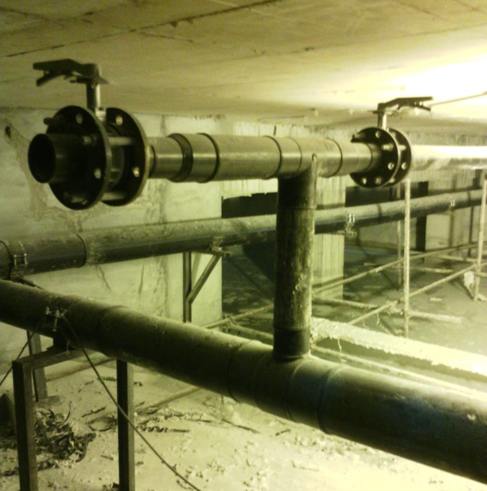

Public Utility · Water
Karachi Water & Sewerage Board
Potable water distribution network serving Karachi, using the Aquadex UPVC pressure piping system.
Discover how Dadex systems power public utilities, industrial complexes, infrastructure, and major building developments across Pakistan.
Dadex systems are supplied through project contractors, distributors and technical teams to organisations across Pakistan. The references below reflect applications and sectors where Dadex products and technical services have been used.
Potable water distribution network serving Karachi, using the Aquadex UPVC pressure piping system.

Gas distribution infrastructure across Sindh, using T-Flex PE 100 gas piping systems.

Specialised piping systems supplied for industrial applications at the Pak-Arab Refinery complex.

Nikasi UPVC SWV and Flowline drainage systems for residential and commercial developments.

Polydex PP-R and Aquadex systems supplied for multiple water supply schemes across Punjab.

Cable ducting and conduit systems supplied for airport infrastructure projects.
T-Flex gas piping systems supplied for SNGPL distribution projects.

Complete SWV and drainage solutions using Nikasi and Flowline systems for the housing development.

Hot and cold water plumbing systems supplied using Polydex Premium PP-RCT.
Note on references. Project references reflect applications and sectors where Dadex systems have been supplied. Project-specific scope, quantities and delivery information can be provided by Dadex Sales and Technical Services where appropriate.
Dadex systems are engineered for the sectors that shape Pakistan's built environment, from single-family housing to large-scale infrastructure.
Residential plumbing, drainage and roofing systems.
Water supply, SWV, drainage and ducting systems.
Pressure-rated piping and low-noise drainage systems.
Underground water, sewerage, drainage and utility ducting.
Gas, compressed-air, tubewell and industrial piping.
A selection of the public utilities, industrial companies, developers and infrastructure organizations associated with Dadex applications.
Water & sewerage
Gas infrastructure
Gas distribution
Industrial
Water supply
Infrastructure
Building services
Development